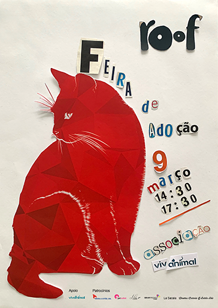

‹
›
The Adoption Fair poster is a secondary project called Roof. It was intended to call people's attention through the
touch sensation of the letters.
For the construction, the Photoshop program was used.
Poster

Thank you very much for your time. Please contact me to discuss more about design!